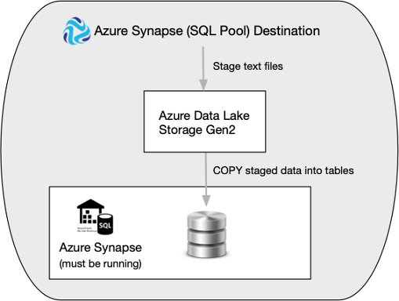
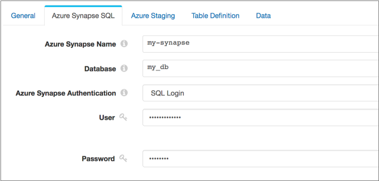
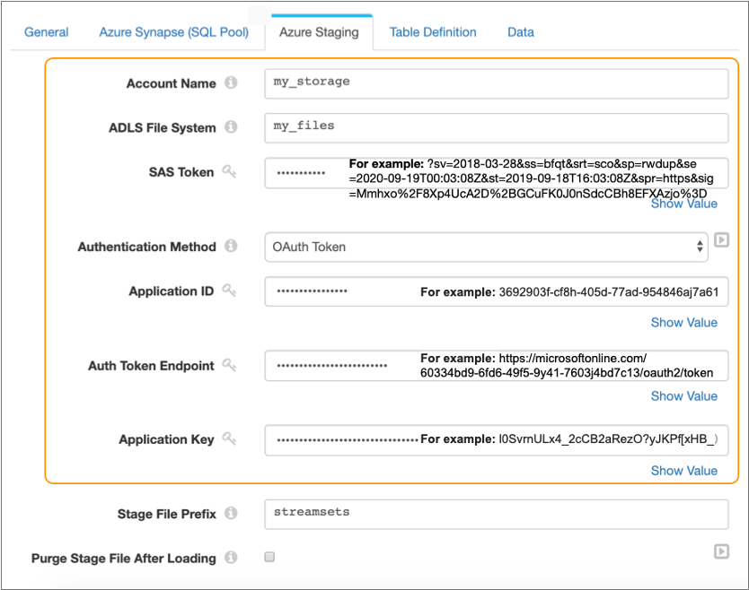
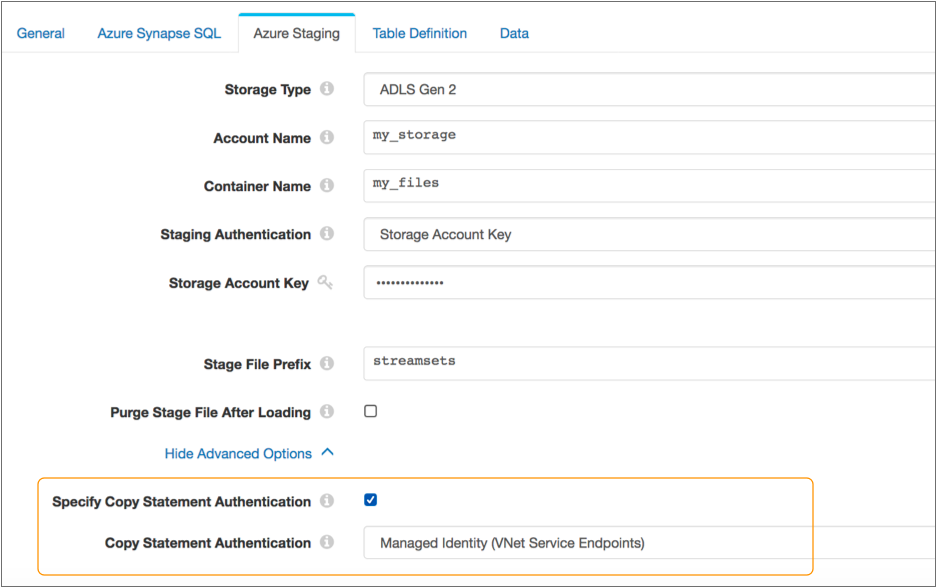

Azure Synapse SQL
Supported pipeline types:
|
To load data, the destination first stages the pipeline data in CSV files in a staging area, either Azure Blob Storage or Azure Data Lake Storage Gen2. Then, the destination executes a COPY command to bulk load the staged data into Azure Synapse.
The following image displays the steps that the destination completes to load the data:

When you configure the Azure Synapse SQL destination, you specify authentication information for your Azure Synapse instance and for your Azure staging area. When needed, you can also specify copy statement authentication details for bulk loading to Azure Synapse.
You specify the name of the schema and tables to load the data into. The destination writes data from record fields to table columns based on matching names.
You can configure the destination to compensate for data drift by creating new columns in existing database tables when new fields appear in records or by creating new database tables as needed. When creating new tables, you can specify a partition column and partition boundary values to use.
You can configure the root field for the row, and any first-level fields that you want to exclude from the record. You can specify characters to represent null values.
You can configure the destination to replace missing fields or fields with invalid data types with user-defined default values. You can also configure the destination to replace newline characters and trim leading and trailing spaces.
Before you use the Azure Synapse SQL destination, you must install the Azure Synapse stage library and complete other prerequisite tasks. The Azure Synapse stage library is an Enterprise stage library. Releases of Enterprise stage libraries occur separately from Data Collector releases.
Prerequisites
Install the Azure Synapse Stage Library
You must install the Azure Synapse stage library before using the Azure Synapse SQL destination.
You can install Enterprise stage libraries using Package Manager for a tarball Data Collector installation or as custom stage libraries for a tarball, RPM, or Cloudera Manager Data Collector installation.
Supported Versions
| Data Collector Version | Supported Stage Library Version |
|---|---|
| Data Collector 3.19.x and later | Azure Synapse Enterprise Library 1.0.x |
Installing with Package Manager
You can use Package Manager to install the Azure Synapse stage library on a tarball Data Collector installation.
-
Click the Package Manager icon:
 .
.
-
Select Azure Synapse Enterprise Library, then click the
Install icon:
 .
.
Installing as a Custom Stage Library
You can install the Azure Synapse Enterprise stage library as a custom stage library on a tarball, RPM, or Cloudera Manager Data Collector installation.
Prepare the Azure Synapse Instance
Before configuring the destination, prepare your Azure Synapse instance.
- If necessary, create a database in Azure Synapse.
- If necessary, create a schema within the database.
You can use the default schema named
dboor any other user-defined schema. - If necessary, create tables within the schema.
If the tables defined in the destination do not exist, the destination can create new tables in the schema. You can configure the destination to load data into existing tables only, as described in Specifying Tables.
- Set up a user that can connect to Azure Synapse using SQL Login or Azure Active
Directory password authentication.
For more information about these authentication methods, see the Azure documentation.
- Grant the user the following permissions that are required to use the COPY command
to load data into Azure Synapse:
- INSERT
- ADMINISTER DATABASE BULK OPERATIONS
If you want the destination to handle data drift automatically, grant the user the additional permission:- ALTER TABLE
If you want the destination to create tables automatically while handling data drift, grant the user the additional permission:- CREATE TABLE
Prepare the Azure Storage Staging Area
Before configuring the destination, prepare a staging area in Azure Blob Storage or Azure Data Lake Storage Gen2. The destination stages CSV files in the staging area before loading them to Azure Synapse.
- If necessary, create an Azure storage account in Azure Blob Storage or Azure Data
Lake Storage Gen2.
For information about creating an account, see the Azure documentation.
- If necessary, create a container to act as the staging area for the destination.
Azure Data Lake Storage Gen2 refers to storage as either a file system or container.
For information about creating storage, see the Azure documentation.
- If you plan to use Azure Active Directory with Service Principal authentication to
connect to the staging area, complete the following steps. If you plan to use
Storage Account Key authentication to connect to the staging area, you can skip
these steps:
- If necessary, create a new Azure Active Directory application for Data Collector.
If the storage account already has an existing Azure Active Directory application, you can use the existing application for Data Collector.
For information about creating a new application, see the Azure documentation.
- Grant the application the Storage Blob Data Contributor or Storage Blob Data
Owner role.
For information about configuring access control, see the Azure documentation.
- If necessary, create a new Azure Active Directory application for Data Collector.
Enable Access to the Container
The Azure Synapse SQL destination uses the COPY command to bulk load files from the staging area to Azure Synapse.
- Staging connection
- By default, the destination uses the authentication defined in the staging
connection to access the container and perform the copy. The
access required for the connection depends on the authentication method that
you use:
- Azure Active Directory with Service Principal - The minimum required RBAC roles are Storage Blob Data Contributor, Storage Blob Data Owner, or Storage Blob Data Reader.
- Storage Account Key - No permissions are required.
- Copy statement connection
- When you enable the use of a copy
statement connection, the destination uses the authentication
defined in the copy statement connection to connect to the container and
issue the COPY command. The access required for the connection depends on
the authentication method that you use:
- Azure Active Directory User - The minimum required RBAC roles are Storage Blob Data Contributor or Storage Blob Data Owner for the storage account.
- Azure Active Directory with Service Principal - The minimum required RBAC roles are Storage Blob Data Contributor, Storage Blob Data Owner, or Storage Blob Data Reader.
- Managed Identity - The minimum required RBAC roles are Storage Blob Data Contributor or Storage Blob Data Owner for the AAD-registered SQL database server.
- Shared Access Signature (SAS) - The minimum required permissions are Read and List.
- Storage Account Key - No permissions are required.
Connections and Authentication
- Azure Synapse - Determines how the destination connects to Azure Synapse.
- Staging - Determines how the destination connects to the staging area.
- Copy Statement - Optional authentication for the COPY command that bulk loads data from the staging area to Azure Synapse. When not defined, the destination uses the authentication defined for the staging connection.
Azure Synapse Connection
The Azure Synapse SQL destination requires connection details to connect to your Azure Synapse instance.
On the Azure Synapse SQL tab, you specify the name of the Azure Synapse server and the database to connect to.
- SQL Login
- The destination connects to Azure Synapse using a user name and password created in the database.
- Azure Active Directory
- The destination connects to Azure Synapse using an Azure Active Directory
user identity and password. The user identity and password are the credentials used
to sign in to the Azure portal. Enter the full user identity, for example:
user@mycompany.com.
The following image displays a destination configured to connect to the
my_db database in the my-synapse server using the
SQL Login authentication method:

Staging Connection
The Azure Synapse SQL destination requires connection details to connect to the storage account that stages pipeline data. You can use Azure Blob Storage or Azure Data Lake Gen2 as the staging area.
On the Azure Staging tab, you specify the name of the storage account and the name of the container or file system to use.
- Azure Active Directory with Service Principal
- The destination connects to the staging area using the following
information:
- Application ID - Application ID for the Azure
Active Directory Data Collector application. Also known as the client ID.
For information on accessing the application ID from the Azure portal, see the Azure documentation.
- Tenant ID - Tenant ID for the Azure Active Directory Data Collector application.
- Application Key - Authentication key or
client secret for the Azure Active Directory
application. Also known as the client
secret.
For information on accessing the application key from the Azure portal, see the Azure documentation.
- Application ID - Application ID for the Azure
Active Directory Data Collector application. Also known as the client ID.
- Storage Account Key
- The destination connects to the staging area using the following
information:
- Storage Account Key - Shared access key
that Azure generated for the storage
account.
For more information on accessing the shared access key from the Azure portal, see the Azure documentation.
- Storage Account Key - Shared access key
that Azure generated for the storage
account.
The following image displays as destination configured to connect to the
my_files file system in the my_storage Azure Data
Lake Storage Gen2 storage account using the Azure Active Directory with Service
Principal authentication method:

Copy Statement Connection
The Azure Synapse SQL destination creates a connection to issue a COPY command that reads from the staging area and bulk loads the data into Azure Synapse.
The destination uses the connection information specified for the Azure Synapse and staging connections for the copy statement connection. That is, the copy statement connection uses configuration details for the Azure Synapse server and database that you define for the Azure Synapse connection. The copy statement connection also uses configuration details for the staging storage account and container that you define for the staging connection.
By default, the copy statement connection also uses the staging authentication method and configuration details that you define for the staging connection. When needed, you can specify authentication details specifically for the copy statement connection, instead of reusing the staging authentication details.
On the Azure Staging tab, you can enable the use of copy statement authentication and specify the authentication method and details to use.
- Azure Active Directory User
- Can be used only when the Azure Synapse connection uses Azure Active Directory authentication.
- Azure Active Directory with Service Principal
- The destination connects from Azure Synapse to the staging area using the
following information:
- Application ID - Application ID for the Azure
Active Directory Data Collector application. Also known as the client ID.
For information on accessing the application ID from the Azure portal, see the Azure documentation.
- Tenant ID - Tenant ID for the Azure Active Directory Data Collector application.
- Application Key - Authentication key or
client secret for the Azure Active Directory
application. Also known as the client
secret.
For information on accessing the application key from the Azure portal, see the Azure documentation.
- Application ID - Application ID for the Azure
Active Directory Data Collector application. Also known as the client ID.
- Managed Identity
- The destination connects from Azure Synapse to the staging area using a managed identity. You can use this authentication method when your storage account is attached to a VNet.
- Shared Access Signature (SAS)
- The destination connects from Azure Synapse to the staging area using an SAS
token. The SAS token must be configured to allow all permissions and the
HTTPS protocol.
You can create the SAS token using the Azure portal by selecting Shared Access Signature from Settings in the storage account menu. Or you can create the SAS token using the Azure CLI as described in the Azure documentation.
Copy and save the generated token so that you can use it to configure the destination.
The minimum required permissions are Read and List.
- The destination connects from Azure Synapse to the staging area using the
following information:
- Account Shared Key - Shared access key
that Azure generated for the storage
account.
For more information on accessing the shared access key from the Azure portal, see the Azure documentation.
- Account Shared Key - Shared access key
that Azure generated for the storage
account.
The following image displays a destination configured to use the Managed Identity authentication method for copy statement authentication:

The destination also uses a staging connection that connects to the
my_files file system in the my_storage Azure Data
Lake Storage Gen2 storage account using Storage Account Key authentication. If you did
not configure copy statement authentication, the destination would use the specified
storage account key for copy statement authentication.
Specifying Tables
You can use the Azure Synapse SQL destination to write to one or more tables in a schema. The Azure Synapse SQL destination can load data into a single existing schema.
- Single table
- To write data to a single table, simply enter table name as
follows:
<table_name> - Multiple tables
- To write data to multiple tables, specify a field in the record that defines the tables.
Use the Table property on the Table Definition tab to specify the tables to write to.
Enabling Data Drift Handling
The Azure Synapse SQL destination can automatically compensate for changes in column or table requirements, also known as data drift.
- Create new columns
-
The destination can create new columns in existing tables when new fields appear in records. For example, if a record suddenly includes a new
Address2field, the destination creates a newAddress2column in the target table.By default, the destination creates new columns based on the data in the new fields, such as creating an Int column for integer data. You can, however, configure the destination to create all new columns as Varchar.
To enable the automatic creation of new columns, select the Enable Data Drift property on the Table Definition tab. To create all new columns as Varchar, select the Create New Columns as Varchar property.
- Create new tables
- When data drift handling is enabled, you can also configure the destination
to create new tables as needed. For example, say the destination writes data
to tables based on the region name in the
Regionfield. When a newSW-3region shows up in a record, the destination creates a newSW-3table and writes the record to the new table.
Row Generation
When loading a record to a table, the Azure Synapse SQL destination includes all
record fields in the resulting row, by default. The destination uses the root field,
/, as the basis for the resulting row.
You can configure the Row Field property on the Data tab to specify a map or list-map field in the record as the basis for the row. The resulting record includes only the data from the specified map or list-map field and excludes all other record data. Use this functionality when the data that you want to load to Azure Synapse exists in a single map or list-map field within the record.
If you want to use the root field, but do not want to include all fields in the resulting row, you can configure the destination to ignore all specified first-level fields.
/, as the basis for the resulting row. A record contains the
following
fields:{
"name": "Jane Smith",
"id": "557",
"address": {
"street": "101 3rd St",
"city": "Huntsville",
"state": "NC",
"zipcode": "27023"
}
}The destination treats the address map field as a field with an invalid
data type, ignoring the field by default and processing the remaining record data. You
can configure the destination to treat fields with invalid data types as an error
record, as described in Missing Fields and Fields with Invalid Types.
Missing Fields and Fields with Invalid Types
By default, the destination ignores missing fields or fields with invalid data types, replacing the data in the field with a null value.
The default for each data type is an empty string, which represents a null value in Azure
Synapse. You can specify a different default value to use for each data type on the Data
tab. For example, you might define the default value for a missing Varchar field or a
Varchar field with an invalid data type as none or
not_applicable.
You can configure the destination to treat records with missing fields or with invalid data types in fields as error records. To do so, clear the Ignore Missing Fields and the Ignore Fields with Invalid Types properties on the Data tab.
Performance Optimization
Use the following tips to optimize for performance and cost-effectiveness when using the Azure Synapse SQL destination:
- Increase the batch size
- The maximum batch size is determined by the origin in the pipeline and typically has a default value of 1,000 records. To take advantage of the loading abilities that Azure Synapse provides, increase the maximum batch size in the pipeline origin to 20,000-50,000 records. Be sure to increase the Data Collector java heap size, as needed.
- Use multiple threads
- You can use multiple threads to improve performance when you include a multithreaded origin in the pipeline. When Data Collector resources allow, using multiple threads enables processing multiple batches of data concurrently.
- Enable additional connections to Azure Synapse
- When loading data into multiple tables, increase the number of connections that the destination makes to Azure Synapse. Each additional connection allows the destination to load data into an additional table, concurrently.
Azure Synapse Data Types
The Azure Synapse SQL destination converts Data Collector data types into Azure Synapse data types before loading data into Azure.
When you configure the destination to compensate for data drift, you can also configure the destination to create all new columns as Varchar. However, by default, the destination converts record data to the appropriate data type.
| Data Collector Data Type | Azure Synapse Data Type |
|---|---|
| Boolean | Bigint, Bit, Decimal, Float, Int, Numeric, Real, Smallint, or
Varchar. New columns are created as Bit. |
| Byte | Bigint, Decimal, Float, Int, Numeric, Real, Smallint, or
Varchar. New columns are created as Smallint. |
| Byte_Array | Binary, Varbinary, or Varchar. New columns are created as Binary. |
| Date | Date or Varchar. New columns are created as Date. |
| Datetime | Date, Datetime, Datetime2, Smalldatetime, Time, or Varchar. New columns are created as Datetime. |
| Decimal | Decimal, Money, Numeric, Smallmoney, or Varchar. New columns are created as Numeric. |
| Double | Decimal, Float, Numeric, or Varchar. New columns are created as Float. |
| Float | Decimal, Numeric, Real or Varchar. Note: Converting to Decimal or
Numeric can result in some precision loss.
New columns are created as Real. |
| Integer | Bigint, Decimal, Float, Int, Numeric, Real, or Varchar. New columns are created as Int. |
| Long | Bigint, Decimal, Float, Numeric, or Varchar. New columns are created as Bigint. |
| Short | Bigint, Decimal, Float, Int, Numeric, Real, Smallint, Tinyint, or
Varchar. New columns are created as Smallint. |
| String | Char, Datetimeoffset, Nchar, Nvarchar, or Varchar. New columns are created as Varchar. |
| Time | Time or Varchar. New columns are created as Time. |
| Zoned_Datetime | Varchar |
- Geography
- Geometry
Configuring an Azure Synapse SQL Destination
Configure an Azure Synapse SQL destination to load data into Azure Synapse. Be sure to complete the necessary prerequisites before you configure the destination.